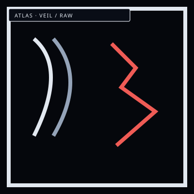

VeilHung cloth of the city
/// RAPID JUMP:
STATUS: ARCHIVE VERIFIED |
CLEARANCE: LEVEL-4 OVERSIGHT |
PROTOCOL: REVERIE DIRECTORATE
ARTICLE
DISCUSSION
SOURCE
HISTORY
YEAR 4,238 · DAWN OF HOPE
LOCATIONS & ATLAS RECORD
District Structure: The Veil and The Raw
Contents
“One side is hung. The other is broken. The street is the seam.”

 Han in streetsWeight between them
Han in streetsWeight between themThe World — Mugenhan
The World — Mugenhan (무겐한)
Planet Name: Mugenhan (무겐한)
Etymology: Japanese Mugen (無限 — infinity/limitless; 夢幻 — dream/illusion) + Korean Han (한 — ancestral trauma/grudge)
Literal Meaning: The Limitless Grudge — or — The Dream of Infinite Sorrow
Planet Population: 8.6 billion
The Somnarak Population: Humanity in and around the oldest city on Mugenhan totals ~30% of the planet — about 2.58 billion people — and it is not centralized inside the walls:
- Inside the walls — Somnarak proper: ~1.29 billion people
- Around the city — the Fringe halo beyond the Desolate: ~1.29 billion — the un-counted, the non-Somnarak citizens, the ones the forms never reach. They live four ways: the slums pressed against the outer wall, the villages settled through the halo, the outside tribes of the deep halo, and the nomads walking the Han-flows between them all.
The Four Corners (사방 — Sabang):
The planet is divided into four quadrants, each representing a different relationship with Han:
`
NORTH
│
┌────────────┼────────────┐
│ │ │
│ CORNER 2 │ CORNER 3 │
│ (Unknown │ (Unknown │
│ City) │ City) │
│ │ │
WEST ────┼────────────┼────────────┼──── EAST
│ │ │
│ SOMNARAK │ UnWiHan │
│ (Our City) │ (Untapped │
│ │ Wild Han) │
│ │ │
└────────────┼────────────┘
│
SOUTH
`
| Corner | Name | Character | Status |
|---|---|---|---|
| 1 | Somnarak | The structured city — Han is managed, contained, shaped | Active — 6,000 years old |
| 2 | Cheonbulok (천불록 — The City of a Thousand Rages) | Han is burned through fury — no Sorrow Entities | Failing — contact lost 1,200 years ago |
| 3 | Mugeukji (묵적지 — The City of Absolute Silence) | Han is suppressed — no emotions, no sorrow | Dying — contact lost 2,000 years ago |
| 4 | UnWiHan (Untapped Wild Han Land) | Raw, unstructured Han — the wilderness of the world | Dangerous — no civilization |
Full details: SOMNARAK_UNKNOWN_CITIES.md
UnWiHan (들한 — Deulhan) — Untapped Wild Han Land:
- The fourth corner of the planet — where Han has never been structured
- Raw, wild, primordial — the Before-Time preserved
- No cities, no factions, no system — just Han in its natural state
- Sorrow Entities form freely here — wild, uncontained, unclassified
- The source of Outside Sorrow — Han flows from UnWiHan into the structured world
- The Exile found something here — the source of Outside Sorrow is not natural
The Other Cities:
- Cheonbulok (Corner 2) — The City of a Thousand Rages. Burns Han through fury. The Furnace is cracking. Source of Outside Sorrow.
- Mugeukji (Corner 3) — The City of Absolute Silence. Suppresses all emotion. The Void is leaking. 5,800 years of stored emotion is a bomb.
- Somnarak has lost contact with both cities — 1,200 and 2,000 years ago respectively
- The Council's response to their decline is unknown — the Archive has records, but they are classified
- The Exile (Ishall) discovered the truth — this is why he was exiled
Full details: SOMNARAK_UNKNOWN_CITIES.md
Scale:
- The planet is Earth-like in size (~510 million km² surface area)
- Each quadrant covers ~127.5 million km²
- Somnarak (the city) is 86 km² — a tiny point within its quadrant
- The city is surrounded by the Desolate (559 km²) and then wilderness
- The wilderness extends for thousands of kilometers before reaching other cities or UnWiHan
Overall Shape: A massive, bounded hexagon. Its internal districts are constructed as jagged, interlocking geometric shapes — a city of angles, not curves.
Visual Reference: somnarak_city_layout.svg
Zone Areas (Total: 86 km²):
| Zone | Name | Area | % | Character |
|---|---|---|---|---|
| A | Alpha Tree | 1.7 km² | 2% | Dense, vertical, restricted. Six buildings. |
| B | The Western Sector | 15.5 km² | 18% | Old, wounded, chaotic. First expansion. |
| C | The Eastern Sector | 18.9 km² | 22% | Controlled, rigid, functional. Second expansion. |
| D | The Mantle | 21.5 km² | 25% | Diverse, alive. Connective tissue. Left side only. |
| E | The Perimeter | 28.4 km² | 33% | Fortified border. Guards Dream and Abyss. |
Hexagon dimensions: Side length ~5.8 km. Diameter ~11.6 km.
Nested Structure
Nested Structure (outside → in)
| Layer | Shape | Zone | Description |
|---|---|---|---|
| Outermost | 10 km buffer | Desolate (unofficial) | Liminal zone — semi-structured Han |
| Border | Outer hexagon | E | The Perimeter — city border |
| Second | Inner hexagon | — | Boundary between E and inner zones |
| Middle | Irregular 8-point polygon | D | The Mantle — chaos meets order |
| Core | Center diamond | A | Alpha Tree — the origin |
Zones B and C occupy the space between the irregular polygon and the diamond (left and right).
The Five Zones
The Five Zones
| Zone | Color | Position | Character |
|---|---|---|---|
| A | Red | Dead center (diamond) | Alpha Tree — origin, six buildings, designed |
| B | Green | Left side | The Western Sector — first expansion, chaotic, wounded |
| C | Blue | Right side | The Eastern Sector — second expansion, controlled, rigid |
| D | Yellow | Upper-left & lower-left only | The Mantle — connective tissue, contains Zone B |
| E | Purple | Top & bottom | The Perimeter — border, guards Dream (above) and Abyss (below) |
Critical Asymmetry: Zone D appears only on the left side — it wraps around Zone B but not Zone C. This means:
District Structure — The Veil and The Raw
District Structure — The Veil and The Raw
In Somnarak, every zone (except Zone A) is internally divided into two layers — not by geography, but by how sorrow is managed.
"Some wear the veil. Some stand in the raw. Neither is free."
The Veil (베일 — Beil)
What it is: Areas where sorrow is managed — faction-controlled, regulated, "safe." Han is dampened, redirected, or suppressed through architectural design, Wardens presence, and Echo-powered suppression systems.
Character:
- Buildings are maintained — clean, repaired, orderly
- Streets are patrolled — Wardens keep the peace
- Sorrow is muffled — you can feel it, but distantly, like hearing someone cry through a wall
- Life is comfortable — but numb. Residents describe feeling "less" here.
Who lives there:
- Faction employees and their families
- Those who can afford the Veil Tax — Echoes paid to maintain suppression
- The "respectable" citizens — those who work within the system
- The elderly, the fragile, those who cannot endure the Raw
The Veil's cost:
- Emotional suppression — residents feel less joy as well as less sorrow
- Dependency — without the Veil, some residents cannot function
- The backlog — suppressed sorrow doesn't disappear; it accumulates beneath the Veil
- When the Veil fails — all the suppressed sorrow erupts at once. This has happened. It is catastrophic.
The Veil's truth: The Veil is not freedom from sorrow — it is delay. The sorrow is still there. It is just being held back. And the longer it is held, the worse the eruption when it breaks.
The Raw (원본 — Wonbon)
What it is: Areas where sorrow is unmanaged — raw, visible, honest. No dampening, no suppression. You feel everything.
Character:
- Buildings are worn — but not necessarily broken. Just... lived in.
- Streets are unpatrolled — or patrolled by cartels, not Wardens
- Sorrow is present — you feel it in the air, in the walls, in the people
- Life is hard — but real. Residents describe feeling "more" here.
Who lives there:
- The poor — those who cannot afford the Veil Tax
- The outcasts — those rejected by the system
- The stubborn — those who refuse the Veil on principle
- Artists, dissidents, those who need to feel to create
- The Frays and underground economies
The Raw's danger:
- Sorrow Entities form more frequently — unmanaged Han crystallizes faster
- Fracture rates are higher — no dampening means more exposure
- Crime is more violent — but also more honest. No pretense.
- The Maw is in the Raw — Zone B's deepest wound is unmanaged
The Raw's truth: The Raw is not chaos — it is freedom. Freedom to feel, freedom to suffer, freedom to connect. The people here are more broken — but they are also more alive.
The Veil/Raw Split by Zone
| Zone | Veil % | Raw % | Notes |
|---|---|---|---|
| A | 100% | 0% | Zone A is entirely faction-controlled. No Raw exists here. |
| B | 20% | 80% | The oldest zone. Most of it is Raw — the Veil cannot suppress Zone B's ancient sorrow. |
| C | 70% | 30% | The most regulated zone. The Veil is strong here — but the Raw exists in pockets. |
| D | 50% | 50% | The balanced zone. The Veil and Raw coexist, sometimes side by side. |
| E | 30% | 70% | The border zone. The Veil is thin — Outside Sorrow seeps in. |
The Veil Tax:
- Residents of Veil areas pay Echoes to maintain the suppression
- The tax is proportional to the area's Han density — heavier sorrow costs more to suppress
- Those who cannot pay are evicted to the Raw
- The Collectors enforce the Veil Tax — it is a form of debt
The Veil/Raw boundary:
- Not a wall — a gradient. The Veil fades gradually into the Raw.
- Some streets are half-Veil, half-Raw — one side managed, one side raw
- The boundary shifts — when the Veil weakens, the Raw expands; when the Veil strengthens, the Raw contracts
- Architects can reinforce or weaken the Veil through construction
Governance Within Districts
Each district within a zone has:
| Feature | Description |
|---|---|
| Sub-Governor | A faction representative who manages the district — reports to the zone's Head |
| Han Signature | The dominant type of sorrow in the district — determines its character |
| Veil/Raw Ratio | How much of the district is managed vs. unmanaged |
| Story Hook | A crisis, mystery, or event that defines the district |
| Collapse Risk | What happens if the Veil fails or the faction loses control |
Vertical Dimension
Vertical Dimension
Each zone extends vertically:
| Level | Character |
|---|---|
| The Spires (Above) | Buildings rise high — the Spire of Dreams, the Sigh Palace's towers. Closer to the Dream realm. Lighter Han. Reality is thinner. |
| Ground Level | The "normal" city. Streets, markets, residences. Moderate Han. |
| The Depths (Below) | Underground — the Abyssal Well, the Crucible's furnaces, the Archive's deepest vaults. Heavy Han. Closer to the Abyss. Reality is denser. |
The deeper you go, the heavier the sorrow. The higher you rise, the thinner reality becomes.
Geographic Features — Mugenhan's Landscape
Geographic Features — Mugenhan's Landscape
The Sorrow Lake (한의 호수 — Han-ui Hosu)
Location: Southwest — between Somnarak and UnWiHan
- Massive lake of liquid Han — cold, dark, reflects memories
- Nothing lives in it — no fish, no plants
- Growing slowly — fed by planet's accumulated sorrow
- Natural barrier between structured and unstructured Han
The Crystal Peaks (크리스탈 봉우리 — Keuriseutal Bongwuri)
Location: North — between Somnarak and Unknown Cities
- Mountains of crystallized Han — ancient, silent, alive
- Harder than stone — impossible to break without specialized tools
- Contain Han from before the Consolihan
- Source of raw Han-crystal for Architects
The Whispering Plains (속삭이는 평원 — Soksagineun Pyeongwon)
Location: East — between Somnarak and Unknown Cities
- Flat, empty plains where wind carries ancient sorrow fragments
- Ground is soft — Han-seeped soil
- A graveyard of civilizations that came before
- Dangerous — whispers can cause Fracture
The Abyssal Rift (심연의 균열 — Sim-ui Gyunyeol)
Location: Beneath Somnarak
- Massive crack extending to the Abyss realm
- Deep, cold, whispers with ancient voices
- Source of Weight element
- Growing slowly — the Abyss expands
The Dream Veil (꿈의 베일 — Kkum-ui Beil)
Location: Above Somnarak
- Shimmering barrier to the Dream realm
- Beautiful — shifting colors like aurora borealis
- Thinning — the Dream is closer than before
- Source of Lament element
CANONICAL RECORD: Sourced directly from the official Project Somnarak Worldbuilding Codex.
CANONICAL CROSS-LINKS & ATLAS CONNECTIONS